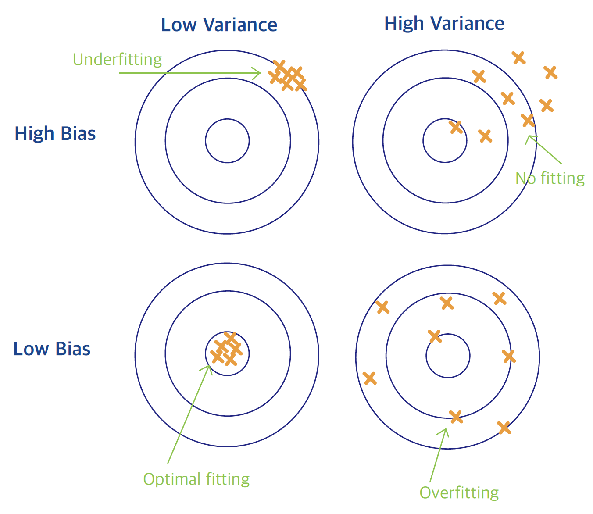
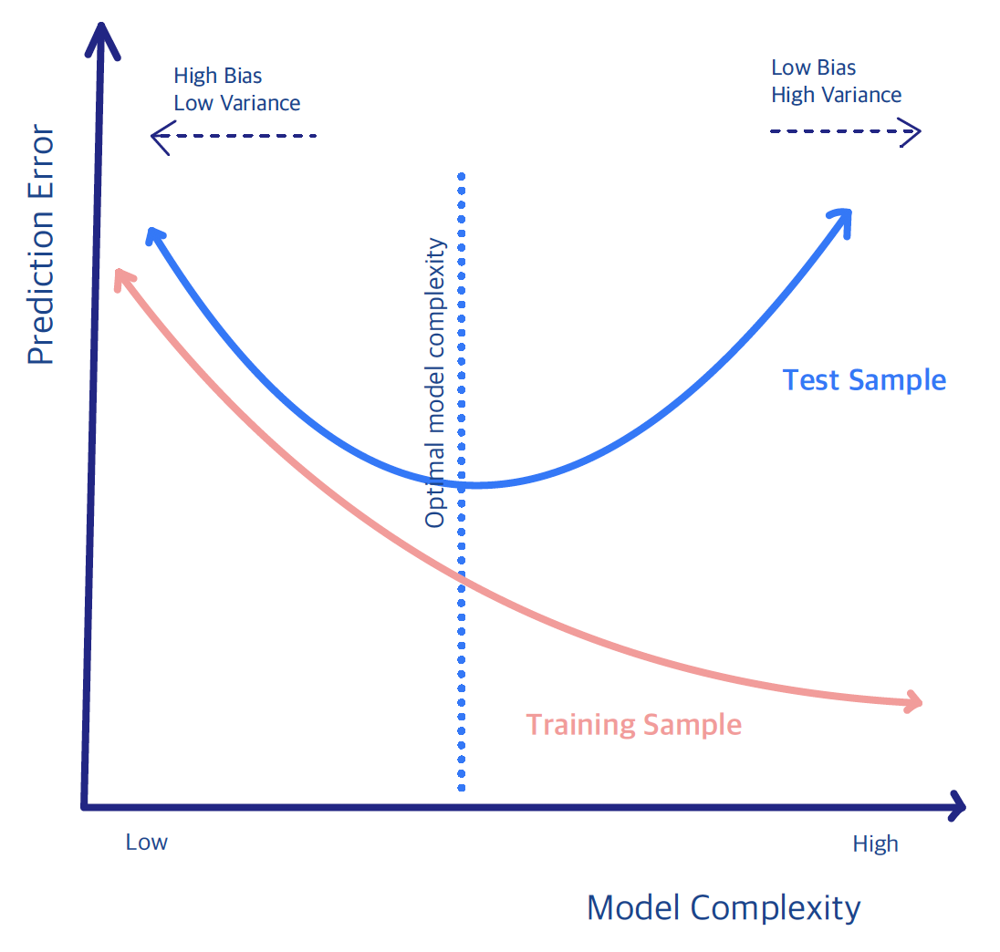

1.4 Bias-Variance Trade-Off
We have already noted that two sources of error affect the quality of our predictions. In statistical learning we must balance:
- Bias: the systematic difference between the average of our estimated function \(\hat{f}\) and the true underlying function \(f\). High bias typically leads to under-fitting and an inaccurate model.
- Variance: the amount by which \(\hat{f}\) would change if we estimated it using a different training sample. High variance typically leads to over-fitting and an unreliable model.
A helpful analogy is to think of the learning problem as a target whose center represents the true model.

How close the fitted values lie to the center is measured by bias. If the points systematically miss the center, the model is a poor approximation of \(f\). Increasing the sample size will not correct a large bias. The spread of the fitted values around their average is measured by variance. When the points are tightly clustered the variance is low; when they are widely scattered the variance is high.
Ideally we would like to reduce both bias and variance simultaneously. In practice this is not possible, so we must trade one against the other. Remembering that our ultimate goal is to minimize the generalization (test) error, not the training error, we observe the following typical behavior:

When the model is highly complex (many parameters), the training error tends to decrease. However, the model often over-fits the training data and therefore exhibits high variance on new data, resulting in poor generalization.
When the model is very simple (few parameters), it tends to under-fit the data. This produces large bias and, again, poor generalization performance.
In this class we will discuss:
flexible modeling techniques that help reduce bias, and
practical strategies for achieving a good bias-variance trade-off.
Two important approaches that we will study in detail are:
Regularization: constrain the parameters to a lower-dimensional space that is determined adaptively by the data.
Ensemble: average many low-bias, high-variance models; the averaging step reduces variance while largely preserving the low bias.